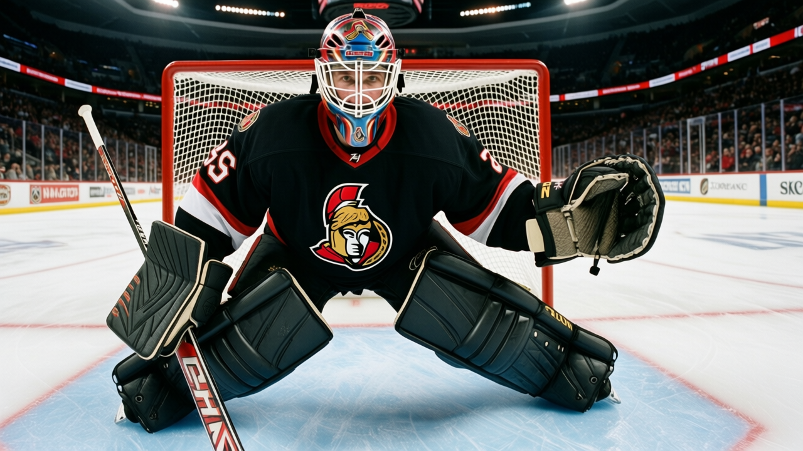

The Infirmary: Ottawa has lost 25 days to injury, fewest in the league, and it has lost 4 straight
No Senator is currently hurt. The team is 15-18-4, on a losing streak, and 7-13 on the road.
 Ray CallumSenior correspondent · Home Ice Network
Ray CallumSenior correspondent · Home Ice Network
 Ottawa Senators has lost 25 days to injury this season, the fewest of any club. No Senator is on the injured list heading into Saturday's game at
Ottawa Senators has lost 25 days to injury this season, the fewest of any club. No Senator is on the injured list heading into Saturday's game at  Mighty Ducks of Anaheim. The team has logged 13 injury spells across 40 games and every man who went down has returned. The Senators are 15-18-4 with 40 points, 4th in the Northeast, riding a 4-game losing streak.
Mighty Ducks of Anaheim. The team has logged 13 injury spells across 40 games and every man who went down has returned. The Senators are 15-18-4 with 40 points, 4th in the Northeast, riding a 4-game losing streak.
 Pittsburgh Penguins has 309 days lost.
Pittsburgh Penguins has 309 days lost.  Detroit Red Wings has 23 injury spells.
Detroit Red Wings has 23 injury spells.  New York Islanders has 21 spells and 7 men out right now. Ottawa is the healthiest club in the league and the record does not show it.
New York Islanders has 21 spells and 7 men out right now. Ottawa is the healthiest club in the league and the record does not show it.
Ottawa Senators lost 4-3 to  Buffalo Sabres on January 4 and 3-1 to
Buffalo Sabres on January 4 and 3-1 to  New York Rangers on January 6. Across the last 10 games the Senators have scored 31 and allowed 39. The offense has produced in recent contests, including 4 goals against Buffalo.
New York Rangers on January 6. Across the last 10 games the Senators have scored 31 and allowed 39. The offense has produced in recent contests, including 4 goals against Buffalo.
 Patrick Lalime86 has started 33 of 40 games, an 82 percent share.
Patrick Lalime86 has started 33 of 40 games, an 82 percent share.  Martin Prusek77 has 9 starts at 22 percent, and Ray Emery76 has 2. Lalime was one of the 13 men to take a spell this season and he is back, with no repeat injury designations on his record.
Martin Prusek77 has 9 starts at 22 percent, and Ray Emery76 has 2. Lalime was one of the 13 men to take a spell this season and he is back, with no repeat injury designations on his record.
The road is the problem
Ottawa Senators opens a 3-game road trip at Mighty Ducks of Anaheim on January 8, at  Calgary Flames on January 9, and at
Calgary Flames on January 9, and at  Edmonton Oilers on January 11. The season's road record stands at 7-13. At home the number reads 11-9. With nobody on the IR and a healthy corps, the road gap is what this team needs to fix.
Edmonton Oilers on January 11. The season's road record stands at 7-13. At home the number reads 11-9. With nobody on the IR and a healthy corps, the road gap is what this team needs to fix.
The Senators have scored 148 goals and allowed 155 this season. No player on the club has required three or more trips to the medical room.